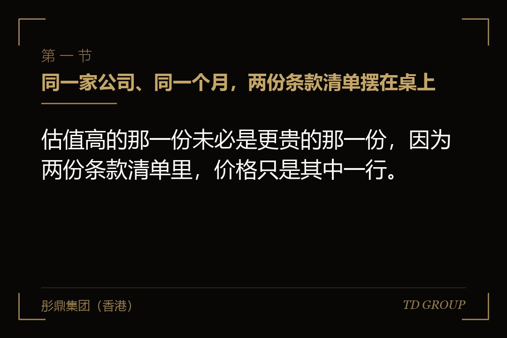
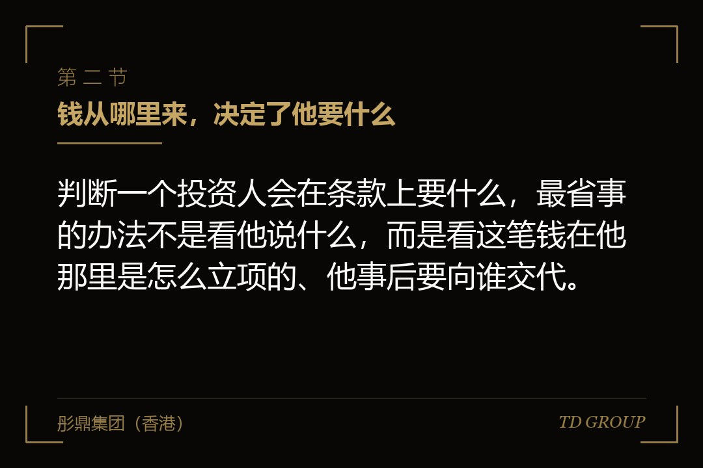
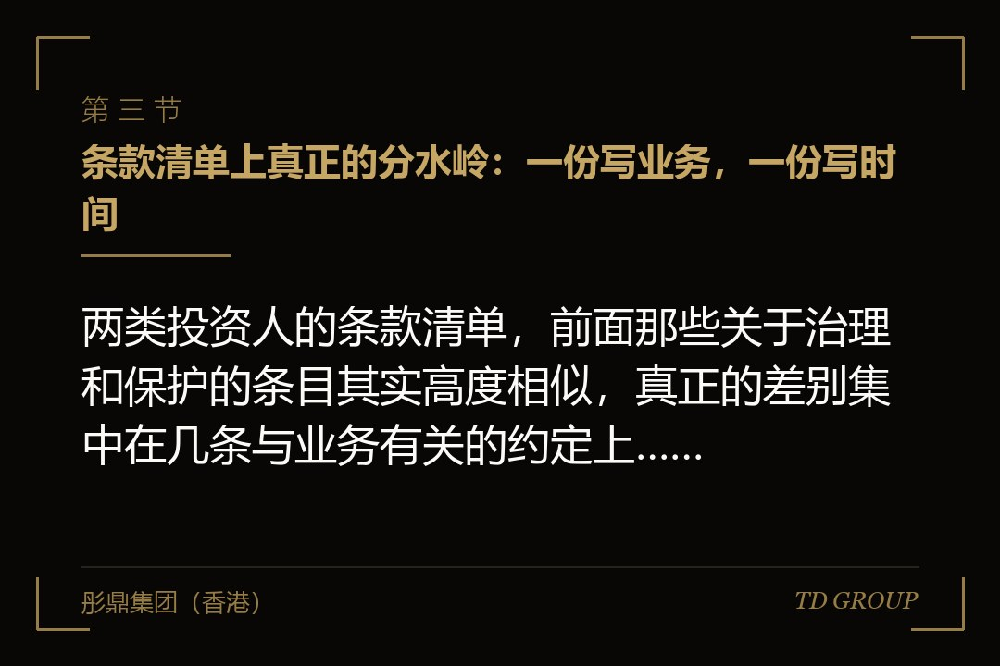

一、同一家公司、同一个月，两份条款清单摆在桌上

结论先行：估值高的那一份未必是更贵的那一份，因为两份条款清单里，价格只是其中一行。一家做工业传感器的企业，在同一个月拿到了两份条款清单。一份来自它下游的一家整机制造企业，投前估值给到两亿一千万，占股一成半；另一份来自一支基金，投前估值两亿六千万，占股一成二。创始人当时的头一个反应很自然：后面那份更划算，少让出三个多点的股权，还多认了五千万的估值。
他把两份文件拿去请人逐条看，才发现价格那一行以外，两份东西的分量完全不同。
整机厂那份里写着：本轮之后三年内，标的公司在同类产品上不得向该整机厂指定的三家同行供货；标的公司新开发的传感器型号，该整机厂享有优先采购的权利，采购价格按照约定的方式与标的公司的成本挂钩；标的公司的月度产能排布与在手订单情况，按月向该整机厂指定的联系人提交。
基金那份里没有这些，取而代之的是一组与时间有关的安排：若干年内未能完成合格的下一轮或者其他约定情形，投资方有权按约定方式要求创始人一侧受让其持有的股权，以及一系列关于本轮资金动向与重大事项的约定。
这里先把话说清楚：这两份条款清单里，没有哪一份是"陷阱"，也没有哪一方是"不好的投资人"。整机厂那些要求，是它的采购部门与技术部门提出来的，因为它出这笔钱的立项理由本来就写着保供应；基金那些要求，是它对它背后出资人的交代方式，因为那笔钱是有还款时点的。
两边都在做各自位置上正常的事。真正需要企业主想明白的是：这两份文件附带的成本，落在企业身上的位置完全不同——一份落在毛利和客户结构上，一份落在时间表和股权结构上。
那家传感器企业后来算了一笔账。整机厂的排他条款挡掉的那三家同行，合计占它当年出货量的两成六；而这三家的订单毛利，比整机厂自己给的价格高出若干个点。
也就是说，那份看起来只是估值低了五千万的条款清单，实际上在签字当天就把公司未来三年的一部分收入和更高的那部分毛利一起划走了。
反过来，基金那份的代价则藏在几年之后：如果公司届时既没融到下一轮、也没有走到能被收购的位置，那条与时间有关的安排就会变成创始人个人层面的一笔债。
本文讲的就是这两类钱的差别，以及它附带的东西各自落在哪里。有几件相邻的事此处不展开：优先购买权与共同出售权具体怎么设计、新股优先权怎么谈、一票否决的清单该保留哪几条、信息权给到什么颗粒度、以及产业方持股与同业竞争在后续申报中的处理，都是各自独立的话题，本文只讲它们与"钱是谁给的"之间的关系。国资背景的引导基金另有一套自己的逻辑，与本文讲的两类都不完全相同，也不在这里展开。
二、钱从哪里来，决定了他要什么

结论先行：判断一个投资人会在条款上要什么，最省事的办法不是看他说什么，而是看这笔钱在他那里是怎么立项的、他事后要向谁交代。
产业方出的钱，多数来自它自身经营产生的现金，或者它集团层面的投资预算。这笔钱在它内部要走一道立项：业务部门提出来，投资部门做方案，最后由它的董事会或者投委会批。
立项书上写的理由，往往不是"这家公司值钱"，而是"我们缺一块产能""我们进不去这个品类""这个环节的成本我们控制不住""这个细分市场我们看不清楚"。
所以钱到位之后，提出立项的那个业务部门是要拿结果的——它拿的结果不是估值涨了多少，而是货有没有供上、品类有没有铺开、信息有没有拿到。这就是为什么产业方的条款清单里常常有排他、优先供货、价格约定和信息约定：那不是它多要，那是它当初立项的依据。
基金的钱来自它背后的出资人。这笔钱有约定的期限，到期要以现金的形式还回去，还的时候看的是实际收回了多少，不是账面上涨了多少。
所以基金在意的事情高度集中在三件上：这家公司几年之后能不能被人买走或者走到公开市场、如果走不到那一步有没有别的路把钱拿回来、以及这中间自己这一笔的价格会不会被后来的人压下去。
它对企业日常经营的干预通常比产业方少，因为它并不需要企业按它的节奏供货，也不需要企业的客户名单；但它对时间的要求硬，因为它自己那一头的时间是硬的。
把这两件事并排放着看，很多以前想不通的谈判细节就通了。为什么产业方对估值往往不像基金那么敏感？因为它这笔钱的收益可以由两部分构成，一部分是股权本身的增值，另一部分是业务上省下来或者赚回来的钱，后面那部分在它内部是可以单独算账的。
为什么基金在尽调时把客户集中度、订单可持续性问得那么细，而对你的生产工艺兴趣有限？因为它判断的是几年之后有没有人愿意接手这家公司，而不是这家公司能不能给它供货。为什么产业方对交割的时间通常不那么急，基金却会催？因为产业方的钱不催它自己，基金的钱催它。
由此可以推出一条对企业方非常实用的判断：先想清楚自己这一轮真正缺的是什么。缺的是订单和产能落地能力，产业方那笔钱附带的东西可能正好是你要的；缺的是纯粹的资金与一个不干涉经营的股东，那么产业方附带的东西对你就是纯成本。
企业主最容易犯的错，是拿一份"两边都想要"的心态去谈——既想要产业方的订单，又不想接受它的排他；既想要基金的高估值，又不想接受它的时间表。谈判桌上这两种组合都不存在，因为对方要的东西恰恰是它出这笔钱的理由。
还有一类中间形态要提一句：产业方通过一支它自己出钱设立的投资主体来投，或者一支基金背后有明显的产业背景出资人。这时候名义上的身份和实际的诉求可能不一致。判断办法还是那一条——看条款清单里有没有业务性的要求。有排他、有供货、有信息报送的，不管它叫什么名字，都按产业方来准备。
三、条款清单上真正的分水岭：一份写业务，一份写时间

结论先行：两类投资人的条款清单，前面那些关于治理和保护的条目其实高度相似，真正的差别集中在几条与业务有关的约定上，而这几条恰恰最容易在谈判后期被当成"小条款"匆匆带过。
产业方那一侧，常见的业务性约定有这么几组。其一是排他与限制供货：约定标的公司在某类产品、某个区域或者某个客户群体上不得向指定的对象供货或者提供服务。
其二是优先采购与优先供应：标的公司新开发的产品，投资方有优先采购的权利；或者反过来，标的公司需要优先满足投资方的采购需求，在产能紧张时先保它。其三是价格约定：采购价格与标的公司的成本按某种方式挂钩，或者约定投资方拿到的价格不高于标的公司给其他客户的价格。
其四是竞业与人员约定：核心技术人员在一定期限内不得为投资方的竞争对手服务，甚至延伸到标的公司不得与其竞争对手建立业务关系。其五是信息报送：产能、在手订单、客户结构、成本构成、新产品进度，按约定频率提交给投资方指定的部门。
这五组里，头三组直接改写企业的损益表，第四第五组改写的是企业的可选项。一家做水处理设备的企业签过一份这样的协议：投资方是它下游的一家工程总承包企业，约定标的公司给它的设备价格，不高于给任何其他客户的价格。
这一条听起来很公平，实际执行两年后企业才发现它的杀伤力——因为该总承包商是它最大的客户，量最大、账期最长，本来就该拿最低的价格；而这一条把"最低价"从一个可以随单谈的商业判断，变成了一条合同义务，于是企业在给任何一个新客户报价时，都必须先想一遍这个价格会不会倒逼自己给大客户降价。三年下来，这家企业的综合毛利率没有随着规模扩大而改善，反而被压在一个窄区间里动弹不得。
基金那一侧的条款清单，业务性的约定通常很少，取而代之的是与时间和价格有关的安排：本轮资金的用途与动向、重大事项的事前同意、后续轮次的定价保护、以及在约定期限内未达成某些情形时的处理方式。
这些条款的性质与前面那五组不同——它们平时不影响你怎么做生意，但会在某个时点集中兑现。一家做智能门锁的企业，创始人在签字时对那条与时间有关的安排没太在意，理由是"我们肯定做得起来"。
三年后行业增速放缓，公司还活着、还在盈利，只是估值起不来，那条安排到点触发，创始人才发现自己和这位股东的时间表从来就不是同一张表：他打算把公司稳稳做十年，而对方那笔钱从进来那天起就有一个还回去的日子。
所以谈判时的正确动作，是把两份条款清单按"影响损益""影响可选项""影响时间表"分成三堆，而不是按"重要条款""次要条款"来分。
企业主在谈判后期精力耗尽的时候，往往对治理条款寸土必争，却对一句"优先满足投资方的采购需求"点头放过——前者可能只是开会麻烦一点，后者会在你产能最紧张、最该把货给出价最高的客户的那一天，让你没得选。至于这几类条款各自具体怎么设计、怎么设置触发条件与例外，是另外的话题，此处不展开。
四、钱进来之后，企业每天要多做的那些动作
结论先行：产业方股东带来的最大变化不在条款清单上，而在投后企业的日常流程里；这部分成本在签字那天没有人会告诉你，因为它不表现为费用，而表现为时间。
一家做冷链仓储与配送的企业，接受了一家食品加工企业的战略投资。
打款之后的头三个月，公司里陆续多出来这些事：按对方要求把仓储管理系统的部分数据接口开放出来，让对方能实时看到它自家货品的库位与周转；每月做一次三方对账，因为对方既是股东也是客户，货款与投资款要分开走；对方的品控团队每季度到仓一次，按它自己的标准出一份整改清单；新增仓库的选址方案，要在提交董事会之前先给对方的供应链部门看一遍；对方要求所有涉及它的运输数据不得用于任何形式的对外分析。
这些要求单看都不过分，合起来的效果是：这家企业的运营总监每个月大概有四到六个工作日花在与这一位股东有关的事情上，而这位股东只占一成出头的股权。更麻烦的是流程上的耦合——由于系统接口已经打通，后来公司想引入一套新的仓储系统时，改造成本里多出来一块专门为这位股东做的适配，而这块成本在做预算时没有人想到。
这类"投后的日常"，在产业方股东身上普遍存在，因为产业方投你的目的本来就是要在业务上跟你发生关系，发生关系就要对接。
企业方在签字之前该做的准备动作，也正是从这里长出来的：把对方在条款清单和讨论中提到的所有业务性要求列出来，逐条问一句"这件事落到我们公司，是谁做、每月要花多少时间、要不要改系统、改一次多少钱"。
这份表通常一页纸就够，但它能把一堆看不见的成本变成看得见的数字，谈判的时候你才有依据去要求把某些要求限定范围、限定频率、或者约定由对方承担相应的费用。华尔街彤鼎俱乐部里，企业主在这一项上最常见的懊悔是：条款清单逐字看过了，投后每天要多做什么却从没算过。
基金股东这一侧的投后日常是另一种形态：定期的财务与经营数据报送、董事会与股东会的会议节奏、重大事项的事前沟通、以及在需要签字的时点配合出文件。它的强度通常低于产业方，但确定性更高——报表一定要按时给，会一定要开起来。
这里同样有一件企业方常常低估的事：基金能不能拿到及时准确的数据，会直接影响它在下一轮里替你说话的力度。数据给得晚、给得乱，最直接的后果不是被批评，而是它在下一轮里对你的判断变得保守。至于信息权应当给到什么颗粒度，是另外的话题，此处不展开。
五、股东名册上多了一位同行之后，下一轮变难在哪里
结论先行：产业方股东对企业最深远的影响，不发生在它进来的那一轮，而发生在下一轮——因为它改变的不是你的股权比例，是别人看你时的身份判断。
一家做工业软件的企业，在某一轮引入了一家大型制造集团作为战略股东，占股不到两成。当时的想法很实在：有了这位股东背书，同行业的客户会更放心用它的产品。头一年确实如此，客户数涨得很快。到了下一轮出去谈的时候，问题才浮出来。
原本对它有兴趣的另外两家制造集团，在看过股东名册之后先后退出了讨论，理由几乎一样：我们不太方便投一家已经有同行在里面的公司，我们的数据和工艺参数最终会跑到这套系统里去。
而几支纯财务背景的基金则问了另一个问题：如果几年后这家公司要被卖掉，现在这位产业股东会不会有优先的权利、会不会不同意卖给它的竞争对手？
这两类顾虑指向的是同一件事：产业方股东一旦在册，这家公司在别人眼里就不再是一家中立的公司。对于本身就服务于整条产业链的企业——软件、检测、物流、材料、工业服务——这个身份变化的代价尤其大，因为它的商业模式依赖于所有客户都相信它是中立的。
一家做第三方检验检测服务的企业验证过这件事的另一面。它接受了一家上游材料生产企业的投资，占股一成二。消息传开之后的一年里，与该材料企业存在竞争关系的四家客户中，有三家把送检量减了一半以上，其中一家干脆全部转走。
这些客户没有一家提出过质疑，也没有人指责这家检测机构会做假——他们只是在自己的合规流程里，把"送检机构的股东是竞争对手"这一条记成了风险，然后按流程处理掉。企业方直到年底做客户流失分析时才把这两件事对上号。
所以引入产业方股东之前，有几个问题值得先问清楚。其一，你所在的行业里，客户是否在意供应商的股东背景；这件事更可靠的调研方式不是自己揣测，而是找两三位关系稳固的客户直接问一句"如果我们的股东里有某某，你们内部会不会有说法"。
其二，这位产业股东的竞争对手，是不是你现在或者将来的重要客户；如果是，损失是可以估算的，就该在估值里体现出来。其三，条款里能不能约定持股比例的上限、以及在什么情形下对方要退出。其四，它的持股是通过它自身还是通过一个独立的投资主体持有，两者在外界的观感上差别不小。
至于产业方股东与后续可能出现的同业竞争认定之间的关系，那是另一个独立话题，此处不展开。这里只强调一件事：股东名册是对外可见的，它传递的信息不受你控制。华尔街彤鼎俱乐部讨论过一个说法，挺贴切——产业方股东是一件穿在身上的衣服，你穿上它的同时，也就选择了不去某些场合。
六、几年之后卖给谁：产业方在册时，后路会窄在哪一段
结论先行：企业方在融资时想的是把钱拿进来，投资人想的是几年后把钱拿出去；而产业方在册这件事，恰恰对"拿出去"那一头的影响最大。
一家做半导体封装材料的企业，创立第七年时有意整体出售，当时账上有稳定的利润，也有两家海外同行表达过兴趣。真正开始推进以后，交易卡在一个地方：几年前那一轮进来的产业股东，按当初的约定对股权转让享有优先的权利。
这条本身很常见，也谈得下来，麻烦的是它对交易节奏的影响——任何一个外部买家在报价之前，都必须先接受一个事实：自己认真做完尽调、谈完价格之后，这位产业股东有权按同样的条件把它替换掉。于是有意向的买家要么直接放弃，要么把这个不确定性折进报价里。最终这家企业的出售拖了十一个月，成交价格低于最初的预期。
这里要说明的是，这个结果不能归咎于那位产业股东——它只是行使了当初白纸黑字写好的权利，而那份条款当年也是双方谈定的。问题出在企业方当时没有把这一条放进"几年后卖公司"的场景里推演一遍。条款清单谈判时，创始人关注的是这一轮，而那一条真正兑现是在若干年之后。至于这类优先权条款本身怎么设计、怎么设置行权期限与例外情形，是另一个独立话题，此处不展开。
除了这一类明面上的权利，产业方在册还会在另外两个地方让后路变窄。其一是买家范围：这位产业股东的直接竞争对手，通常不会成为这家公司的买家；而在很多细分行业里，最有意愿也最出得起价的买家，恰恰就是那几家彼此竞争的产业集团。
其二是估值口径：如果这家公司相当一部分收入来自这位产业股东本身，那么任何一个外部买家在估值时都会把这部分收入单独拿出来讨论——这块收入在换了股东之后还在不在、价格是不是市场价、会不会在交易完成后逐步消失。这些问题没有标准答案，但只要它们存在，估值就会被打折。
基金股东在退出这件事上的影响是另一种形式：它一般不限制你把公司卖给谁，反而通常是最积极推动出售的那一方；但它有时间表，而时间表会决定"什么时候卖"，那个时点未必是卖得最贵的时点。企业方要面对的现实是，这两种约束都真实存在，区别只是一个限制对象、一个限制时机。
因此在引入产业方之前，值得做一次简单的推演：假设五年之后要把这家公司整体出售，把可能的买家列出来，看看这位产业股东的存在会划掉其中几个、会让剩下的几个多问哪些问题。这个动作花不了半天，但它把一个几年后才会兑现的成本，提前搬到了签字之前——而签字之前才是还能改条款的时候。
七、签字之前该问自己的几个问题
结论先行：选产业方还是选基金，不是一道价值观题，也不是一道估值比较题，而是一道匹配题——匹配的是你这家企业当前真正的短板，以及你自己对时间的打算。
一家做宠物食品的企业提供了一个正面的例子。它在某一轮同时拿到了产业方与基金的意向，最后选了产业方，条件是接受排他约定，代价是估值低了一截。
创始人做这个决定的依据很清楚：公司当时的短板不是钱，是产能利用率长期偏低，而这位产业股东承诺的年度采购量，能把产线的利用率从五成推到八成以上，而这个变化对单位成本的影响是可以直接算出来的。
他把这笔账做成了一页纸：接受排他每年少掉的那部分收入与毛利是多少，利用率提升带来的成本下降是多少，两者相减是正数，而且正得很明显。
同时他在条款上争到了两件事——排他的范围限定在特定的产品线，不覆盖公司未来新开的品类；排他的期限与采购量挂钩，对方连续两个年度未达到约定采购量的，排他自动失效。
这就是产业方那笔钱被用对了的样子：不是因为对方名气大，而是因为它附带的东西，正好补上了这家企业算得出来的那个缺口，而且企业方把这个交换写成了可验证的条件，而不是一句口头承诺。
综合前面六节，签字之前值得逐条问自己的问题大致是这些。其一，这一轮我真正缺的是什么——是现金、是订单、是某个技术或者渠道的入口、还是只是需要一个能撑住估值的股东？答案不同，选择就不同。其二，对方那些业务性要求，落到我的损益表上是多少钱？
把排他覆盖的客户、优先供货占用的产能、价格约定压住的毛利，各自估个数，与估值的差额放在一起比。其三，投后我每个月要为这位股东多花多少人力、要不要改系统、这笔时间成本谁承担？其四，我的客户在不在意我的股东是谁？找两三位客户实际问一句，别自己猜。
其五，五年之后我打算把这家公司带到什么位置，那个位置与这位股东的时间表对不对得上？其六，这些交换有没有写成可验证的条件——对方承诺的采购量、导入的客户、开放的渠道，有没有落成带数字、带期限、带失效机制的条款，还是只停留在会议纪要里？
最后这一条最容易被忽略，也最容易在两年之后变成争议：产业方的业务承诺如果只写在意向文件里，负责这件事的那位高管一旦调岗，承诺往往就跟着一起没了。
彤鼎集团（香港）有限公司在这类事情上承担的是统筹与陪同角色：与企业方一起把两类投资人各自的条款清单按"影响损益、影响可选项、影响时间表"拆开比对，把业务性要求折算成可以放进估值里的数字，把口头承诺整理成可验证的条款，并在谈判的各个节点上帮助企业判断哪些条件应当争、哪些可以让、哪些必须设失效机制。
涉及审计、法律意见、证券发行与承销等持牌业务的，一律由具备相应资质的合作机构承做。以上均为市场经验性表述，实际结果受行业结构、交易条件与投资人组织形式影响，不构成固定标准。
因此，回到那家传感器企业的选择上——他最后签的是整机厂那一份，但把排他范围压缩到了两家、把期限从三年改成两年、并加了一条采购量不达标即失效。
本质上，产业方和基金给的从来就不是同一种钱，关键在于你先把自己缺的那样东西说清楚，然后再去看谁手里有它、以及要拿什么去换。